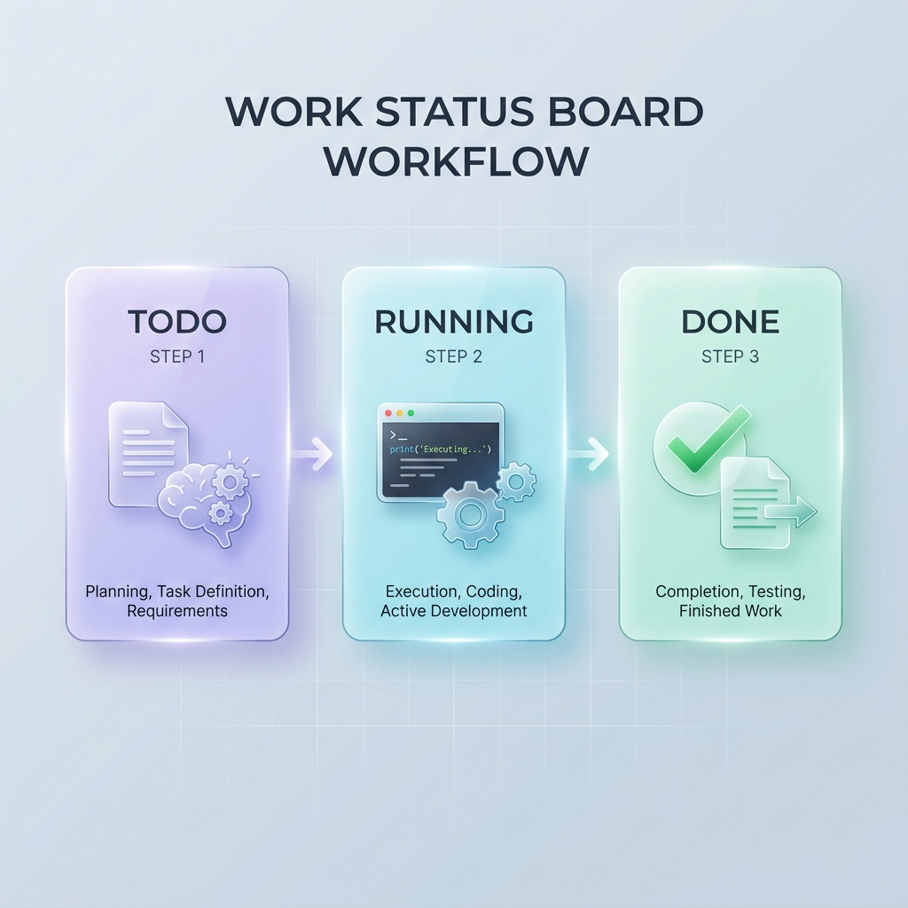
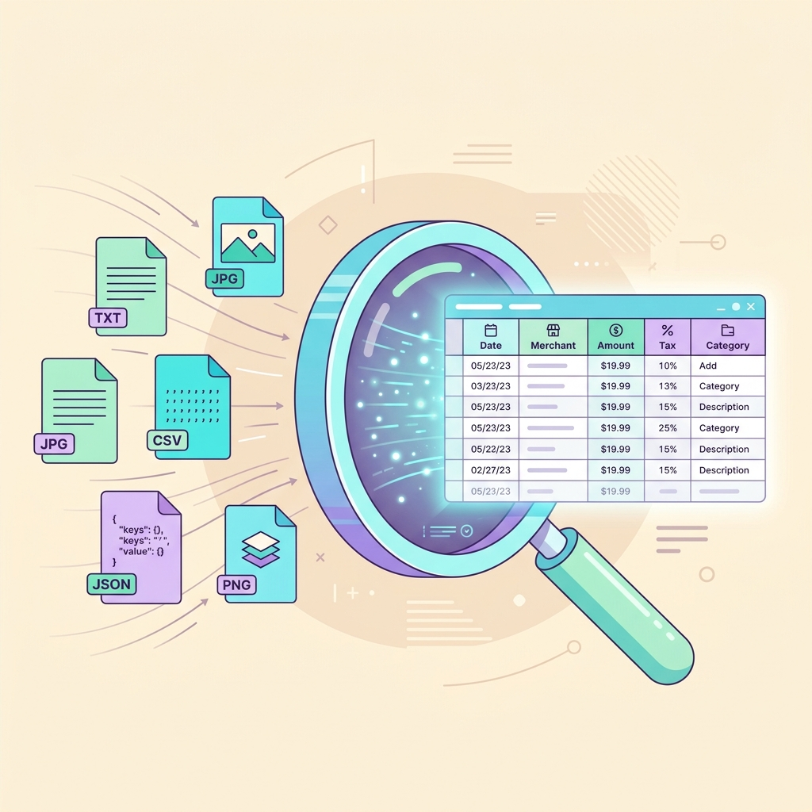

การประยุกต์ใช้ AI Agent ในงานสำนักงาน ผ่านกรณีศึกษาปฏิบัติจริง 4 กรณี
เมื่อจบการอบรม ผู้เข้าอบรมจะสามารถ
| เวลา | กิจกรรม | ผลงานของผู้เรียน |
|---|---|---|
| 09.00–09.30 | แนวคิด AI Agent และการสาธิตโดยวิทยากร | — |
| 09.30–10.00 | ติดตั้งและเข้าใช้งาน Antigravity 2.0 | เครื่องพร้อมปฏิบัติการ |
| 10.00–10.45 | กรณีศึกษาที่ 1 · สรุปบิลใบเสร็จจากภาพสแกน | ตาราง CSV + รายงาน HTML |
| 11.00–12.00 | กรณีศึกษาที่ 2 · วิเคราะห์สินเชื่อตามเกณฑ์ | รายงานประเมิน + แดชบอร์ด |
| 13.00–14.15 | กรณีศึกษาที่ 3 · รายงาน Productivity เวรพยาบาล | ตารางสรุป + รายงานผู้บริหาร |
| 14.30–15.45 | กรณีศึกษาที่ 4 · สร้างแอปด้วย Google Apps Script | ระบบลงทะเบียนใช้งานจริง |
| 15.45–16.30 | ธรรมาภิบาลการใช้ AI · สรุปและถาม–ตอบ | แบบประเมินหลักสูตร |
| กรณีศึกษา | แนวคิดที่ฝึก | ผลงานที่ได้ |
|---|---|---|
| 1 · สรุปบิลใบเสร็จ | เอเจนต์อ่านข้อมูลจากภาพ (OCR) | ตารางข้อมูล + รายงานการเงิน |
| 2 · วิเคราะห์สินเชื่อ | ตัดสินใจตามเกณฑ์ โดยมนุษย์ตรวจรับ | รายงานประเมินผู้สมัคร 3 ราย |
| 3 · Productivity พยาบาล | วิเคราะห์ข้อมูลปริมาณมาก และตรวจพบความผิดปกติ | รายงานผู้บริหารพร้อมข้อเสนอแนะ |
| 4 · แอป Apps Script | สร้างระบบจริงและนำขึ้นใช้งานบนคลาวด์ | เว็บลงทะเบียนเชื่อม Google Sheets |
เข้าใจหลักการก่อนลงมือ: ระบบที่ "ตอบคำถาม" กับระบบที่ "รับมอบหมายงานแล้วทำจนเสร็จ" ต่างกันโดยพื้นฐาน
| มิติ | แชตบอต | เอเจนต์ |
|---|---|---|
| การทำงาน | ตอบทีละคำถาม แล้วหยุดรอ | วางแผนหลายขั้นตอน แล้วทำต่อเนื่องจนจบงาน |
| การเข้าถึงไฟล์ | เข้าถึงโฟลเดอร์ในเครื่องไม่ได้ | อ่าน เขียน และแก้ไขไฟล์ในพื้นที่ทำงานได้ |
| เครื่องมือ | จำกัดอยู่ในหน้าต่างสนทนา | เขียนและรันโค้ด ค้นเว็บ เชื่อมต่อบริการภายนอก |
| เมื่อเกิดข้อผิดพลาด | ผู้ใช้ต้องถามใหม่เอง | อ่านข้อผิดพลาด แก้ไข แล้วลองใหม่โดยอัตโนมัติ |
เครื่องมือ 4 ระดับ ตั้งแต่ผู้ใช้ทั่วไปจนถึงนักพัฒนา — วันนี้ใช้ Desktop App เป็นเครื่องมือหลักตลอดหลักสูตร
| เครื่องมือ | ลักษณะ | เหมาะกับ |
|---|---|---|
| Desktop App | หน้าจอกราฟิก มีกระดานติดตามงาน สั่งงานภาษาไทยได้ | พนักงานทั่วไป — เครื่องมือหลักของหลักสูตรนี้ |
| CLI | สั่งงานผ่านเทอร์มินัล เขียนสคริปต์อัตโนมัติได้ | ผู้ดูแลระบบ งานตั้งเวลาบนเซิร์ฟเวอร์ |
| SDK | ไลบรารี Python / Node.js เรียกเอเจนต์จากโปรแกรมอื่น | นักพัฒนาที่ต้องการฝังความสามารถลงแอปของตน |
| IDE & IDL | เครื่องมือพัฒนาโค้ดครบวงจร | วิศวกรซอฟต์แวร์ โครงการขนาดใหญ่ |

เปิดโฟลเดอร์ cases/case-N ที่ได้รับแจกเป็นพื้นที่ทำงานของ Antigravity แล้วปฏิบัติตามคู่มือ PDF ประจำกรณี — สไลด์ต่อจากนี้สรุปบริบทและพรอมต์หลักของแต่ละกรณี
บทบาท: เจ้าหน้าที่การเงิน

ใช้ความสามารถอ่านภาพ (Vision/OCR) อ่านใบเสร็จทั้ง 10 ใบในโฟลเดอร์ receipts/ แล้วดำเนินการดังนี้: 1. สกัดข้อมูลแต่ละใบ: เลขที่เอกสาร (Invoice_No), วันที่ (Date), ชื่อร้านค้า (Merchant), รายการสินค้าโดยย่อ (Description), สกุลเงิน (Currency), ยอดรวม (Total_Amount) 2. เรียงรายการตามวันที่ในใบเสร็จ 3. บันทึกเป็นไฟล์ expense-sheet.csv ในโฟลเดอร์นี้ 4. หากใบใดอ่านค่าไม่ได้ ให้ใส่คำว่า UNREADABLE และแจ้งสรุปว่าใบไหนมีปัญหา
บทบาท: เจ้าหน้าที่วิเคราะห์สินเชื่อ — ผู้สมัคร 3 ราย เอกสารรายละ 3 ชิ้น (ใบสมัคร · รายการเดินบัญชี · เครดิตบูโร)
| # | เกณฑ์ (จากไฟล์ loan-policy.md — ต้องผ่านครบทุกข้อ) | เงื่อนไข |
|---|---|---|
| 1 | รายได้เฉลี่ยจริงต่อเดือน จากรายการเดินบัญชี 6 เดือน | ไม่น้อยกว่า 40,000 บาท |
| 2 | อัตราส่วนภาระหนี้ต่อรายได้ (DTI) | ไม่เกิน 40% |
| 3 | คะแนนเครดิตบูโร (NCB Score) | ไม่ต่ำกว่า 650 |
| 4 | บัญชีค้างชำระ | ต้องเป็น 0 บัญชี |
อ่านเกณฑ์จากไฟล์ loan-policy.md แล้วประเมินผู้สมัครทั้ง 3 รายในโฟลเดอร์ applicant-01 ถึง 03 โดยแต่ละราย: 1. ดึงข้อมูลและวงเงินที่ขอกู้จาก application-form.json 2. คำนวณรายได้เฉลี่ยจริงจากเงินเข้าใน bank-statement.csv ย้อนหลัง 6 เดือน (เดือนที่ไม่มีเงินเข้านับเป็น 0) 3. หายอดผ่อนหนี้ต่อเดือนจาก Statement แล้วคำนวณ DTI 4. อ่าน NCB Score และบัญชีค้างชำระจาก credit-report.txt 5. ตัดสินตามเกณฑ์ทั้ง 4 ข้อ สรุป APPROVED หรือ REJECTED พร้อมแสดงการคำนวณทุกขั้น 6. รายที่ REJECTED ให้เขียนข้อเสนอแนะเพื่อการปรับปรุง บันทึกผลเป็นไฟล์ loan-evaluation-report.md พร้อมตารางเปรียบเทียบทั้ง 3 รายตอนท้าย
บทบาท: หัวหน้าฝ่ายการพยาบาล
อ่านไฟล์ nurse-shift-log.csv และนิยามตัวชี้วัดในไฟล์ kpi-definitions.md แล้วดำเนินการดังนี้: 1. คำนวณตัวชี้วัดครบทุกตัวตามนิยาม แยกรายพยาบาลทั้ง 8 คน 2. ตรวจธงเตือน (Flags) ตามเกณฑ์ในไฟล์นิยาม และระบุชื่อผู้ที่เข้าเกณฑ์แต่ละธง 3. บันทึกตารางสรุปเป็นไฟล์ nurse-productivity-summary.csv (1 แถวต่อพยาบาล 1 คน พร้อมคอลัมน์ Flags ตอนท้าย)
บทบาท: ผู้กำหนดความต้องการ — เอเจนต์คือวิศวกรผู้สร้าง
จากโครงสร้างข้อมูลในไฟล์ sample-registrations.csv ให้สร้างระบบลงทะเบียนอบรมและแดชบอร์ดดังนี้:
1. [api-handler.gs] ฟังก์ชัน doPost(e) รับข้อมูลลงทะเบียนแบบ JSON
(ชื่อ-สกุล, อีเมล, เบอร์โทร, อาชีพ, หัวข้อที่สนใจ) บันทึกลงแถวถัดไปของ Google Sheets
แนบ Timestamp คอลัมน์แรก ตอบกลับ JSON {status:"success"} และรองรับ CORS
2. [registration-portal.html] หน้าเว็บสองฝั่ง: ซ้ายฟอร์มลงทะเบียน
ขวาแดชบอร์ด Chart.js (กราฟแท่งตามอาชีพ + กราฟวงกลมตามหัวข้อที่สนใจ)
มีช่องวาง Apps Script URL, ปุ่มส่งแบบ Fetch API ไม่รีเฟรชหน้า, แจ้งสถานะการส่ง
3. บันทึกทั้งสองไฟล์ลงในโฟลเดอร์นี้
ความสามารถของเอเจนต์มาพร้อมความรับผิดชอบของผู้สั่งงาน — สามหลักการต่อไปนี้ใช้กับทุกงานจริงในองค์กร